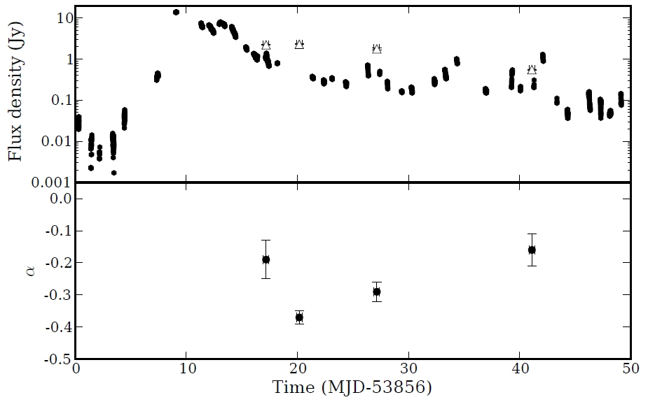
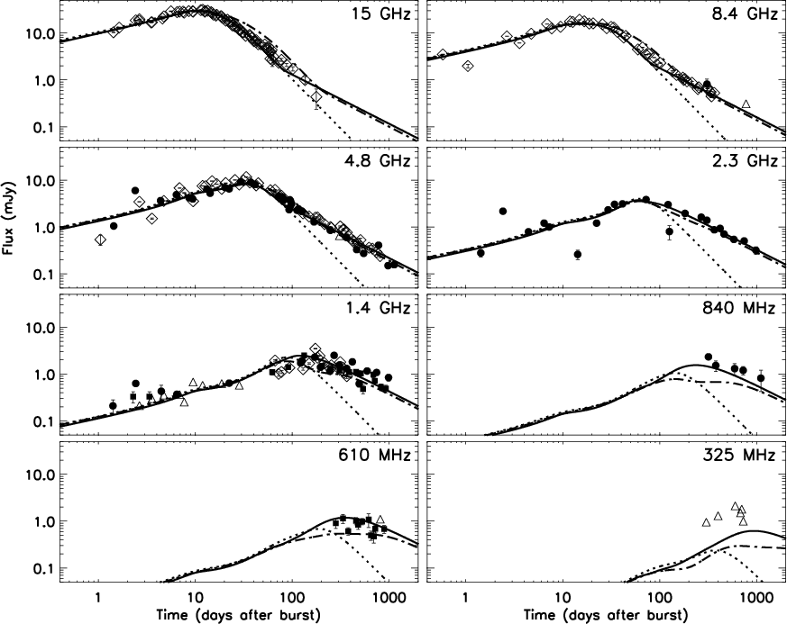
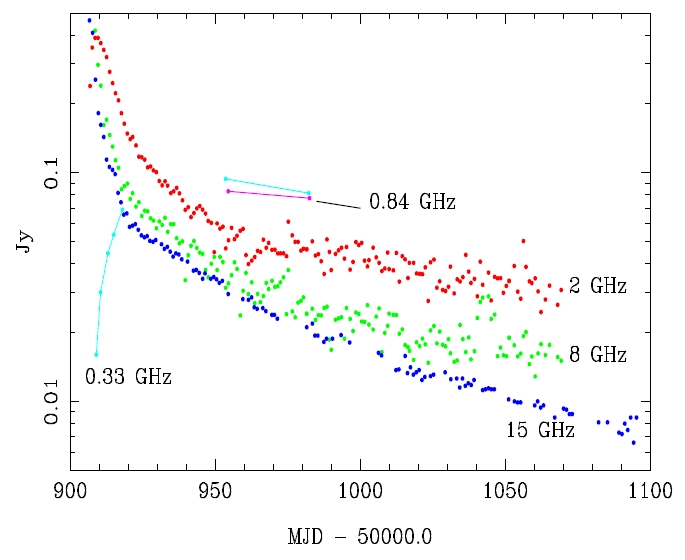

The process of accretion powers the most energetic phenomena known in the Universe, from around supermassive black holes at the centres of galaxies (active galactic nuclei; AGN), their stellar-mass analogues (X-ray binaries; XRBs), as well as gamma-ray bursts (GRBs), the hyper-energetic explosions detected out to the edge of the visible Universe. In all cases, the accretion process is often directly coupled to outflow from the systems in the form of powerful, collimated jets, which can in some cases be accelerated close to the speed of light. The presence of relativistic electrons and magnetic fields in the jets imply that they emit synchrotron radiation. Although this synchrotron emission is known to extend up through the X-ray bands in several classes of sources, it is most easily detected in the radio regime, where it is the dominant emission process. The Jets Working Group aims to use LOFAR to monitor the synchrotron emission from any class of system producing transient, high-energy outflows (including the aforementioned accreting sources, the newly-discovered class of tidal disruption events, as well as outflows from young stellar objects, magnetars and supernovae) with the following primary goals
Accreting Galactic compact objects, be they black holes, neutron stars, or even white dwarfs, spend the majority of their time in a relatively low-luminosity state. Occasionally, they undergo spectacular outbursts, in which their luminosities increase by several orders of magnitude. These outbursts have in the past been detected primarily by high-energy X-ray and gamma-ray satellites, with occasional triggered radio monitoring to connect the changing behaviour of the jets to the changes in the accretion disc that caused them. Previous such studies have shown a one-to-one connection between X-ray spectral and variability properties and the morphology of the jets (e.g. Fender, Belloni & Gallo 2004) but the sporadic nature of the radio observations to date has meant that the details of this connection remain unclear. The radio sky monitoring capability provided by LOFAR will finally provide high-cadence radio monitoring of such outbursts, allowing a detailed correlation of the radio and X-ray light curves, to determine the causal relationship between changes in the accretion flow and subsequent changes in the jets. Similar activity cycles are believed to exist in AGN (e.g. Körding, Jester & Fender 2006), albeit on much longer timescales, so advancing our understanding of one class of jet-producing sources will have implications for all the others. There is also a possibility that new, radio-only accretion states will be discovered, that are not accompanied by X-ray activity.
The jets provide a significant input of kinetic energy, momentum, and magnetized plasma into their surroundings. They are also an important source of particle acceleration, and have been proposed as a potential origin of cosmic ray particles. The energy injected into the interstellar medium by Galactic X-ray binaries has been calculated to be several percent of the time-averaged kinetic luminosity of supernovae (Fender, Maccarone & van Kesteren 2005). On larger scales, the feedback effect of jets from AGN can influence the evolution of galaxies and even galaxy clusters, in extreme cases heating the entire intracluster gas by almost a keV! The low frequencies of LOFAR allow us to probe larger spatial scales for a given baseline length, and are sensitive to older synchrotron-aged electrons. This allows us to study extended emission at large distances from the compact object driving the jets, thus helping us to determine the impact of the jets on their surroundings.
Extending the spectral energy distributions of transient sources into the MHz band with high-cadence, time-resolved monitoring will provide a low-frequency constraint for spectral modelling, helping to determine the contribution of the jets to emission at higher frequencies. This is crucial in understanding the emission mechanisms in the X-ray band, and hence the behaviour of matter in the strong-gravity, high-magnetic field, high-energy conditions prevalent close to accreting compact objects, which we can never hope to reproduce here on Earth.
It has been suggested that some accretion events (such as GRBs) may kick off with a burst of coherent emission. The wide field of view of LOFAR enables high-cadence monitoring of large volumes of sky, opening up sufficient parameter space to detect such bursts, should they exist.
Click for larger versions.
|  |
Comparison of the decaying synchrotron radio emission following an outburst of the Galactic X-ray binary source Cygnus X-3. Black points show 15 GHz data from the Ryle Telescope, open triangles show the 140 MHz emission monitored with the Low Frequency Front Ends on the Westerbork Synthesis Radio Telescope. Bottom panel shows the spectral index between the two frequencies. The outburst is detected after a few days, even at sub-GHz frequencies. Figure taken from Miller-Jones et al., 2007 |
|  |
Modeling results of the afterglow of GRB 030329 at centimetre wavelengths. Light curves are shown from the WSRT, GMRT, VLA, ATCA & Ryle Telescopes. Three fits to the data are shown: the dotted line represents a fit to the first 100 days of radio observations with a wide jet expanding in a homogeneous medium; the solid line corresponds to a model in which the blast wave becomes non-relativistic after 80 days; the dash-dotted line corresponds to a model in which a third jet-component with an even wider opening angle is present. The latter model is excluded by the observations below 1 GHz, which leaves the model with the non-relativistic phase after 80 days as the preferred model for the late-time behaviour of the blast wave. Thus low-frequency observations can be crucial in interpreting the physics of the jets and their interaction with their surroundings. Figure taken from van der Horst et al. (2008). |
|  |
Evolution of a radio outburst of the X-ray transient source CI Cam. 2 and 8 GHz data are from the Green Bank Interferometer, 15 GHz data are from the Ryle Telescope, 0.3 and 0.8 GHz data are from the Westerbork Synthesis Radio Telescope. The radio emission arises from an expanding source containing synchrotron-emitting electrons (Mioduszewski & Rupen 2004), where the jets were disrupted by the dense surrounding medium. Figure taken from Fender (2008). |
{kind=link}
{kind=link}
{kind=link}